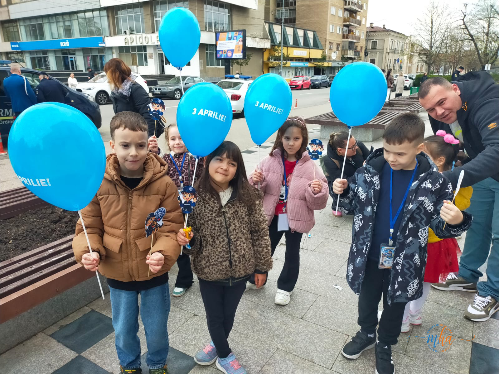
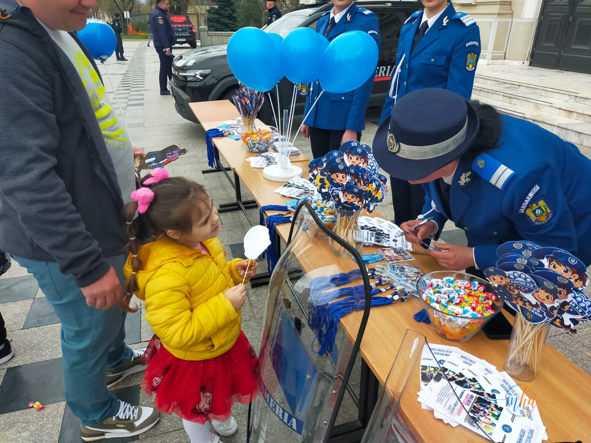
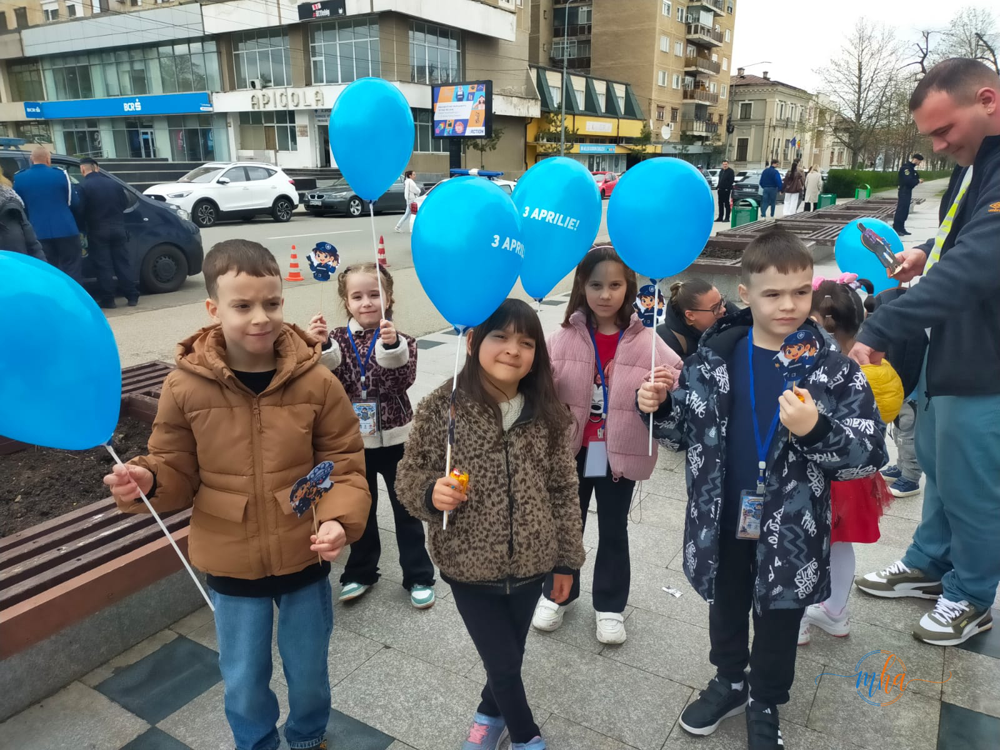

Evenimentul, organizat pe 3 aprilie în Drobeta-Turnu Severin, a marcat finalul unei serii de manifestări dedicate Zilei Jandarmeriei Române și a reunit reprezentanți ai autorităților locale, cadre militare și invitați din comunitate. Simpozionul festiv a avut loc la Palatul Culturii „Teodor Costescu", un cadru simbolic pentru o instituție cu 176 de ani de istorie.


Foto: MehedintiAzi.ro — Copiii din Severin, invitați speciali la aniversarea Jandarmeriei
Tradiție, istorie și responsabilitate
În cadrul simpozionului au fost prezentate momente importante din istoria instituției, dar și rolul esențial pe care jandarmii îl au în menținerea ordinii și siguranței publice. De asemenea, a fost subliniată importanța colaborării între instituții pentru protejarea cetățenilor — un mesaj cu rezonanță mai ales într-o perioadă în care provocările de siguranță publică sunt tot mai complexe.
Jandarmeria Română a fost înființată pe 3 aprilie 1850 și a reprezentat, de-a lungul timpului, un pilon al ordinii publice și al apărării comunităților. Cele 176 de ediții ale Zilei Jandarmeriei sunt un prilej de reflecție asupra istoriei instituției, dar și de reafirmare a angajamentului față de cetățeni.
Distincții și avansări
Evenimentul a fost marcat și de momente emoționante:
- Foști comandanți au primit diplome aniversare, în semn de respect pentru activitatea desfășurată
- Subofițeri merituoși au fost avansați înainte de termen
- Jandarmii cu rezultate deosebite, inclusiv la competiții sportive, au fost premiați

Foto: MehedintiAzi.ro — Bucurie și comunitate în Parcul din centrul Severinului
Apropiere de comunitate
Organizatorii au transmis că evenimentul a fost nu doar unul aniversar, ci și un prilej de dialog și consolidare a relației dintre jandarmi și comunitate. Copiii din oraș au fost invitați speciali — au primit baloane albastre inscripționate cu „3 Aprilie!", materiale educative și dulciuri, iar jandarmii au stat de vorbă cu cei mici despre rolul lor în societate.
La ceas aniversar, reprezentanții instituției au transmis un mesaj de apreciere tuturor jandarmilor — activi, în rezervă sau în retragere — pentru dedicarea și profesionalismul lor în slujba cetățenilor.
— Jandarmeria Mehedinți
Ziua de 3 aprilie 2026 rămâne astfel nu doar o dată din calendar, ci o mărturie că Jandarmeria Română continuă să fie prezentă în viața comunităților, cu același simț al datoriei care a definit această instituție timp de 176 de ani.
Sursa: Inspectoratul de Jandarmi Județean Mehedinți